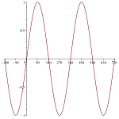
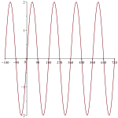
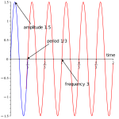
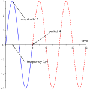

Read and use mathematical models in a technical document
Communicate results in mathematical notation and in language appropriate to the technical field
This section covers the following mathematical concepts.
Use models including linear, quadratic, exponential/logarithmic, and trigonometric (skill)
Identify properties of sine and cosine functions (skill)
We began by looking at trigonometric functions in the context of triangles where they represent the ratio of side lengths. Here we will consider trigonometric functions in the context of properties of their graphs. The graphs have direct applications.
Subsection7.4.1Beyond Triangles
This section illustrates how trigonometric functions can be defined on angles greater than 180°. In triangles every angle had to be less than 180° because the sum of the angles of a triangle are only 180°. However, in many applications rather than measuring angles on objects (like triangles), we are measuring how far or how many times around something has moved. For example a wheel on a car moves more than 180° when we are driving. Use Activity 17 to explore this idea.
Activity17.
Use the the illustration in Figure 7.4.1 to see how angles, including those bigger than 180°, are measured and how the trig functions act on these angles.
(a)
Angles of measure 30° and 210°
(i)
What is the sine value for both angles?
(ii)
Compare the x coordinates of these two points on the sine graph.
(iii)
Where is the triangle created by the angle 210°?
(b)
Angles of measure 45° and 315°
(i)
Compare the sine values for these two points.
(ii)
Where is the triangle created by the angle 315°?
(c)
Angles of measure 45° and 405°
(i)
Compare the sine values for these two angles.
(ii)
Where is the triangle created by the angle 405°?
(iii)
Note the angle displayed at the origin for 405°: why does it not match the slider angle?
(d)
Angles of measure -45° and 315°
(i)
Where are the triangles for these two points?
(ii)
Move the slider from 0° to -45°. Which direction does the point move?
(iii)
Note the angle displayed at the origin: explain why it is reasonable.
Instructions.
Use the slider to change the angle. Observe how the angle is drawn and how the sine and cosine values change.
You can drag the slider or click on it and use the arrow keys.
Figure7.4.1.Bigger Angles
Checkpoint7.4.2.
We can use the definition of sine as a ratio and this understanding of angles to produce a graph. In Figure 7.4.3 drag the slider until you have the full graph. A graph that extends over a longer range (and labeled in degrees) is in Figure 7.4.4.
Instructions.
Use the slider to change the angle and produce the graph of sine. Observe how points on the graph corresponde to heights on the triangle.
Figure7.4.3.Produce Graph of Sine
Now we know what the graph of the sine function looks like and why it looks that way.
Subsection7.4.2Properties of Sine Waves

The horizontal axis ranges from -180 to 720 in increments of 90. The vertical axis ranges from -1 to 1. The graph of sine on this portion consists of 5 humps that are 180 wide and alternate down (starting at -180) and up. From 0 to 720 there are two complete up/down pairs.
Figure7.4.4.Graph of Sine
From the first section we know that the graph of sine is a wave that repeats. The piece that is repeated is called a cycle. In the default graph this is from 0° to 360° as shown in Figure 7.4.3.
The length of the cycle can be modified. Depending on the application we interpret and measure the length of the cycle differently. This section defines two traits of the cycle, illustrates the traits, and gives an alternate definition for one trait.
Definition7.4.5.Period.
The length of a cycle measured in time is called the period.
Definition7.4.6.Wavelength.
The length of a cycle measured in distance is called the wavelength.
The video below illustrates the difference between wavelength and period of a sine wave. The top two sine curves have the same wavelength (2), and the bottom two sine curves have the same wavelength (1). We can see this because the top two curves have one cycle from 0 to 2, and the bottom two curves have one cycle from 0 to 1. This implies the bottom curves have a wavelength that is half that of those on top.
The left two sine curves have the same period. They complete one cycle in one (1) seconds. The right two sine curves have the same period. They complete one cycle in two (2) seconds.
Sometimes instead of measuring how long a single cycle is in units of time, we measure how many cycles occur in a fixed unit of time. This is called frequency.
Definition7.4.7.Frequency.
The number of cycles that occur per second is called the frequency. This is typically measured in Hertz (Hz). 1 Hz is one cycle per second.
Note that frequency is the inverse of the period as shown below. In the video the sine waves above, the sine waves on the right have a period of two (2) and a frequency of \(1/2\text{.}\)
Table7.4.8.Period and Frequency are Inverses
Period
Frequency
\(\frac{n\text{ seconds}}{1\text{ cycle}}\)
\(\frac{n\text{ cycles}}{1\text{ second}}\)
Example7.4.9.
If a wave has a period of \(1/3\) seconds, what is its frequency?
We can see how many \(1/3\) of a second there are in one second. That is
\begin{align*}
f \cdot \frac{1}{3} \amp = 1\\
f \amp = 3
\end{align*}
The frequency is 3.
We can consider this a conversion of units. If the period is
Generally, if the period is \(T\) then the frequency is
\begin{equation*}
f=\frac{1}{T}.
\end{equation*}
Example7.4.10.
What are the period and wavelength of middle C which has a frequency of 261.63 Hz? This is a measurement in a science model so we will use significant digits.
Because we know the frequency we can directly calculate the period.
For the wavelength we need to know that the speed of sound is 1116 feet/second. Now we can use the fact that Hz is cycles per second to convert frequency (cycles per second) to wavelength (feet per cycle). The units suggest that we multiply as follows.
A local AM radio station broadcasts at \(750.0\) Hz. Note radio waves move at the speed of light which is approximately \(2.9979 \times 10^8\) meters per second. What are the period and wavelength of this radio signal?
Solution.
Because we know the frequency we can directly calculate the period.
Frequency, period, and wavelength are all about how fast a sine wave moves. Amplitude is about how strong it is.
Definition7.4.13.Amplitude.
The height of the wave (from center to top) is called the amplitude.
Example7.4.14.

The horizontal axis ranges from -180 to 720. The vertical axis ranges from -2 to 2.
The bottom of the sine wave reaches -2 and the top reaches 2. A complete cycle is repeated from -180 to 0, again from 0 to 180, again from 180 to 360, again from 360 to 540, and again from 540 to 720.
The amplitude of this sine wave is 2. The period is 180. Note without a context period and wavelength are the same. The frequency is
In applications the wavelength, period/frequency, and amplitude are determined experimentally: we rarely see the wave. However, in order to practice distinguishing between these properties, we will use visual examples and exercises.

The horizontal axis is labeled time and ranges from 0 to 2. The vertical axis ranges from -1.5 to 1.5.
The sine wave reaches 1.5 at the top and -1.5 at the bottom. It completes a cycle by 1/3. It completes 3 cycles by 1.
(a)Sine Wave

The horizontal axis is labeled time and ranges from 0 to 12. The vertical axis ranges from -3 to 3.
The sine wave reaches 3 at the top and -3 at the bottom. It completes a cycle by 4. It completes one quarter of a cycle by 1.
(b)Another Sine Wave
Figure7.4.15.Identifying Sine Wave Properties
Example7.4.16.
Consider the sine wave in Figure 7.4.15.(a). The amplitude is 1.5 because the wave reaches a max of 1.5 and a min of -1.5.
The period is 1/3, because a full cycle ends at 1/3. The frequency is 3, because there are three copies of the cycle from 0 to 1.
Switch to the sine wave in Figure 7.4.15.(b). The amplitude is 3 because the wave reaches a max of 3 and a min of -3.
The period is 4, because a full cycle ends at 4. The frequency is 1/4, because the cycle is only 1/4 complete by 1.
Checkpoint7.4.17.
Subsection7.4.3Transformations of Sine
In Subsection 5.4.1 and Subsection 6.2.2 we learned how to transform a graph by shifting it and reflecting it. Those apply to trigonometric graphs as well. This section illustrates vertical and horizontal stretches and connects them to amplitude and wavelength.
Activity18.
This activity demonstrates how the sine function is modified to change amplitude. Use Figure 7.4.18 to answer the following. Note the amplitude of the unmodified graph is 1.
(a)
If you set \(a=2\text{,}\) that is graph \(2\sin(\pi x)\) what is the amplitude?
(b)
If you set \(a=3\text{,}\) that is graph \(3\sin(\pi x)\) what is the amplitude?
(c)
How could you obtain an amplitude of 1/2?
Activity19.
This activity demonstrates how the sine function is modified to change wavelength. Use Figure 7.4.18 to answer the following. Note the wavelength of the unmodified graph is 2.
(a)
If you set \(f=2\text{,}\) that is graph \(\sin(2 \pi x)\) what is the wavelength?
(b)
If you set \(f=3\text{,}\) that is graph \(\sin(3 \pi x)\) what is the wavelength?
(c)
How could you obtain a wavelength of 4?
Instructions.
Use the sliders to see how multiplying inside and outside sine affects the curve.
Figure7.4.18.Amplitude and Wavelength
Exercises7.4.4Exercises
Frequency and Amplitude.
Use the definitions of these properties to answer the questions.
1.
2.
3.
4.
5.
6.
Applications.
Apply your knowledge of frequency and amplitude to answer these wave questions.